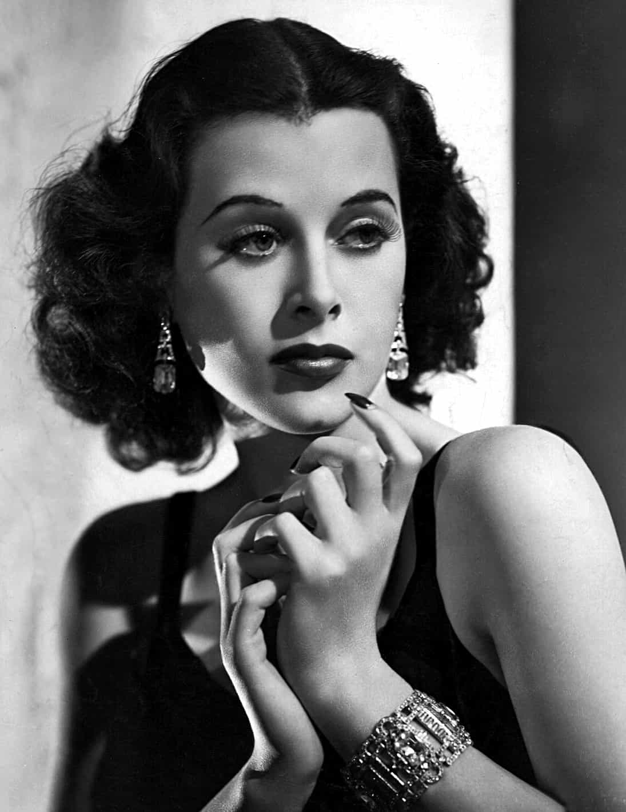

< < < Back
The Myth Of Female Agency – Return Of Kings
I would like to put a myth to rest: “Behind Every Great Man is a Great Woman.” This maxim is utterly false, and easily demonstrated to be the polar opposite of truth. Women inherently lack agency, both moral and physical when compared to men. Men also excel in almost every way where a woman is useful.
Behind Every Great Man…
Not only are there a great many men who had nothing to do with women during their adult lives, such as Saint Paul who authored most of the Christian Bible’s New Testament and remarked that he had the “gift” of singleness, but there are NO women in history who were able to survive very long without a man, or men close by and willing to enable their merest survival, let alone their few extraordinary accomplishments. (Yes, there are some gorgeous women with great intellectual accomplishments, but ladies can’t all be Hedy Lamarr, can they?)

Even if you counter that all boys are first dependent upon their mothers, you must admit that boys are not “great men” in the context of “All Great Men…” Nor can a woman even become a mother without a man to impregnate her, and a boy to gestate in her. A woman cannot become a mother without men and boys defining her as one; her most biologically significant achievement and social identity is utterly dependent upon a man impregnating and protecting her, and the children occupying her womb choosing to uphold their teachings.
Men, on the other hand, are not changed by fatherhood in the way that women are changed through motherhood. Men are the same men they were before childbirth. In nearly all capacities a man can become what a father is through parallel efforts. Motherhood is an ontological actuality, something that can be seen in her own blood and breast; fatherhood is mostly an abstract idea with its ontological foundation resting in the genetics of a third party.
Studies have shown that the success of children-come-adults largely relies upon the presence of fathers during childhood. Additional studies show that single men raise more successful offspring than single mothers or homosexuals. A study in Europe showed that the religiosity of the father has several magnitudes more influence upon the eventual religiosity of the adult offspring. J.S. Mill is one of the most remarkable economists of all time, and was raised entirely by his father and Jeremy Bentham; his mother was absent the picture.
It is well known that single motherhood is the bane of humanity. It is not as well known today that men can do every task a woman can do, other than nursing a baby, better than a woman. That includes nurturing, educating, cooking, cleaning, home making, healthcare, and so on. A powerful and rich man of our ancestral past would use tutors for his children, servants for cooking and cleaning, and his wife would serve little other purpose than birthing and nursing, although nursing could be outsourced to wet nurses as well. The ancient patriarchs had almost no use for a woman, the ancient women had almost no benefit to a rich and powerful man. Women were viewed much like children: a liability, a burden, a responsibility. Women should be grateful for culture that took benevolent care of their gender even though they were nearly useless in every way.
Agency Explained
Agency is the concept that creatures have both the capacity and the physical ability to act in the world according to their own desires. Although I conflate several aspects of agency in this article, metaphysical, physical, and social, it does not harm my assertion that women generally lack agency in every area. Women pretend they were once slaves to men, but women are slaves to their uteruses and their frailty.
Army studies have shown that an extremely athletic young woman in her prime is roughly as capable as a somewhat fit 55 year old man. Neurology has shown that human moral choices are strongly affected by hormones, and women have been shown to have a more divergent, unstable hormonal influence. Men and women solving moral problems utilize varying parts of their brain, according to brain activity imaging. It is obvious that when compared to men women lack physical agency, and debatable that they also lack moral agency as well.
I can demonstrate the general lack of agency women experience through a very quick thought experiment or two. Only the Western woman, eminently privileged princess that she is, believes in “female agency” in the first place, so please understand that I dismiss the vast majority of human females by using the Western princess in my example; debating female agency is a first world issue. Take a Western woman in her pantsuit walking to work, hit pause, and start to deconstruct her life. Take some things out of her purse, take people out of the picture. Seize her birth control. What happens? She gets impregnated or must become chaste—against her would-be will. She becomes a slave to her uterus—where she goes, with whom, who she visits, and the time of day she travels, all drastically change, along with the moral choices she’s presented with or would experience.
Almost all of her life’s decisions have drastically been altered because you took away a one ounce plastic canister of chemical hormones she bought from the utterly patriarchal government protected intellectual-propertied pharmaceutical industry. Take away the abortionist and the abortion industry and the cops protecting fetal murder, and watch her squirm!
Let’s take another thing out of the picture of our Western woman walking the street, something that you cannot see in the picture, something that is not quite visible: men with badges and handcuffs. They’re everywhere. During an interview, when you are considering a female employee or student—if you squint hard enough you can just make out the faint presence of men with guns, and sometimes also the IRS agent carrying envelopes marked with your name, ready to completely destroy your life and your enterprise over the tiniest misstep that would hurt our princess’s feelings. Take these people, these MEN, out of the picture, and you start to see that women are not that independent after all. Take away the white knights, and the other (patriarchal or capitalist) luxuries (dishwashers, automobiles, infant formula, criminal justice, welfare, military) and you are left with just another woman of the world, living in the third world, never even debating her lack or moral agency with men in public. She is blown about upon the winds of men. As Camile Paglia recently remarked at Time Ideas:
“Every day along the Delaware River in Philadelphia, one can watch the passage of vast oil tankers and towering cargo ships arriving from all over the world. These stately colossi are loaded, steered and off-loaded by men. The modern economy, with its vast production and distribution network, is a male epic, in which women have found a productive role — but women were not its author.”
Take a man, pause the picture, start stripping him of his accoutrements, and he remains mostly unchanged. He needs food and water. Not free healthcare, not VAWA, no Pell Grants, no EEOC. He accepts pain and even death, and there are many more willing to replace him in the struggle, and almost nobody cries when he does meet his end—except the women who depend on him of course. He is the master of his fate; he is the captain of his soul.
The Higher Values
Feminism is an operation of patriarchy. Feminism constantly identifies problems and proposes patriarchal solutions pressed down on us from high and rammed home by men with guns and badges. Feminism cannot exist without the men and the patriarchy enabling their delusions of agency and independence. Women are not equal to men, were never equal, and cannot, nor should they be made equal.
A woman’s lack of agency is something neither to celebrate, nor despise. It is something to accept. Perhaps for you, there are higher, truer values and pursuits to you. Life becomes very unhappy when truth is rejected in any way. Humans cannot flourish when they cannot discriminate against lies. Misery is close on the heels wherever political correctness is tolerated. Error must be hated. Statistical probabilities must be categorized, and accurate stereotypes must be propagated. Civilization must shun bad behavior that leads to feral women and other degenerates undermining civilization. It is only a benevolent, just, patriarchal civilization that tolerates feral woman and the degenerate. Take away our Western traditions and moral taboos (as feminists so desire) and those fools will be eaten by mother nature, red in tooth and claw. The mockers cry out for their own annihilation!
Through intolerance, hatred, discrimination, and stereotypes men and women can enjoy human flourishing, peaceful civilization among competing tribes, and a life well lived. Together, men and women can build epic legacies that will last millennia, rivaling those of Odysseus and Penelope, or Adam and Eve. Alone, men can author the greatest ideas or institutions that cradle ages of thinkers and explorers. Alone, women can stop worrying about men, and start celebrating them. Find a good one that is nearby, and devote yourself to him, submit to him, nurture his children, and continue the civilization you are so dependent upon.
Read Next: The Myth Of Male Privilege


{kind=link}
{kind=link}